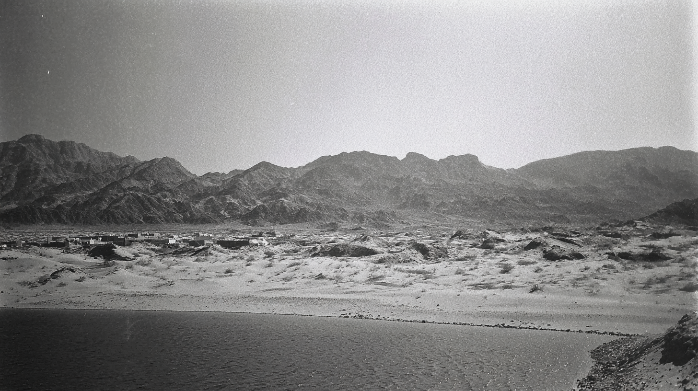
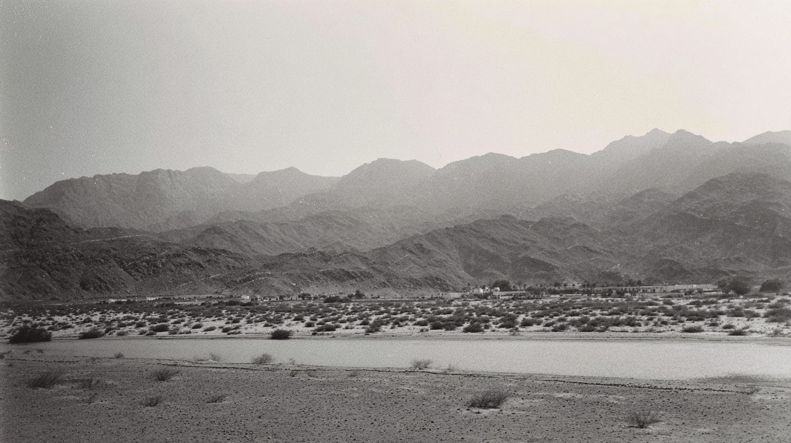

A quiet road runs through a wide desert valley dotted with low shrubs, with layered mountain ridges fading into the distance in soft monochrome tones.
Two camels move across a sandy desert landscape with low rocky hills in the background, captured with subtle motion blur from a moving vehicle.
Blurred camels walk beside a body of water at the base of dark hills, photographed with a soft, cinematic haze and visible motion drag.
A wide, sun-faded view of an ancient desert fort stretches across a barren foreground of stones and dust, its towering earthen walls glowing softly under a hazy, warm sky.
desert fort rising in the very far distance along a quiet roadside, viewed from a slowly moving vehicle, wide cinematic composition, fort stood against vast arid landscape, sandy and rocky foreground, subtle shutter drag in lower frame from car movement, realistic natural motion softness, cinematic film look blended with archival desert photography, muted earth tones, low contrast grading, soft highlight rolloff, hazy dry atmosphere, heat shimmer in the distance, pale warm sky, soft warm reflections in sand and dust, light film grain, organic texture, slight age fade, low digital sharpness
desert landscape with mountains, imperfect framing, film style photography. black and white analog photograph, low contrast grading, soft highlights, hazy atmosphere, arid heat. warm sky, soft warm reflections of the sand. Light film grain, textured film with very fine dimples, organic texture, low digital sharpness, Shot like contemporary cinema, realistic.